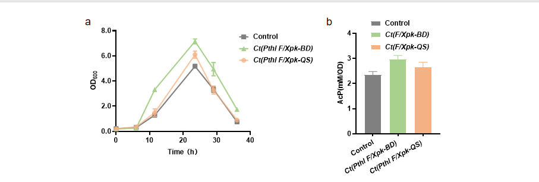
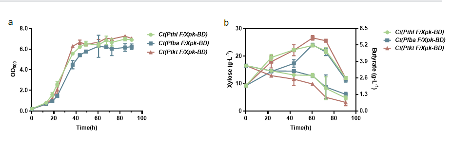

Abstract
Directed evolution of promising engineered strains to improve their
production capacity has received widespread attention in recent years.
This study aims to develop a robust C. tyrobutyricum
chassis which has an alternative non-oxidative glycolysis (NOG) pathway
to EMP pathway and can withstand possible growth side effects of EMP
modification during genomic directed evolution for enhanced or expanded
synthesis capacity of bioproducts. We integrated a non-oxidative
glycolysis (NOG) pathway to EMP pathway in C. tyrobutyricum by introducing F/Xpk gene. Plasmids using two F/Xpk genes and three different native promoters, Pthl, Ptkt and Pfba, were constructed and transferred into C. tyrobutyricum
L319. By analyzing the growth and yields of butyric acid and acetic acid
of the strain, we found that F/Xpk gene derived from C. acetobutylicum and Ptkt
promoter was the best combination for constructing NOG pathway in C. tyrobutyricum, and xylose was the best carbon source for the strain.
1 Engineering C. tyrobutyricum using F/Xpk(QS) or F/Xpk(BD) gene and Pthl promoter
pMTL-Pthl-F/Xpk(QS) plasmid was constructed using X-pMTL-Pthl vector and F/Xpk(QS) gene fragment from the genome of B. adolescentis. pMTL-Pthl-F/Xpk(BD) plasmid was constructed using X-pMTL-Pthl vector and F/Xpk(BD) gene fragment from the genome of C. acetobutylicum. By using E. coli CA434 as a donor strain, pMTL-Pthl-F/Xpk(QS) and pMTL-Pthl-F/Xpk(BD) plasmids were respectively transferred to C. tyrobutyricum, notated as Ct(Pthl F/Xpk-QS) and Ct(Pthl F/Xpk-BD).
Note: a) pMTL-Pthl-F/Xpk(QS); b) pMTL-Pthl-F/Xpk(BD)
Figure 3 Genetic circuits of pMTL-Pthl-F/Xpk(QS) and pMTL-Pthl-F/Xpk(BD)
2 Growth and product yields of Ct(Pthl F/Xpk-QS) and Ct(Pthl F/Xpk-BD)
Ct(Pthl F/Xpk-QS) , Ct(Pthl F/Xpk-BD) and native C. tyrobutyricum (the control) were fermented using glucose as carbon source. Fermentation experiment showed that the growth of Ct(Pthl F/Xpk-BD) was better than that of Ct(Pthl F/Xpk-QS), Figure 4.
Acetyl phosphate (AcP) is the final product of NOG pathway. AcP assay showed that the levels of AcP in Ct(Pthl F/Xpk-BD) and Ct(Pthl F/Xpk-QS) were both higher than the control, which was in accordance with the growth of the strains. This indicated that NOG pathway was open in the engineered strains, Figure 4.
HPLC experiment showed that after fermentation for 26h, the yields of butyric acid were 3.35 g/L and 3.31 g/L in Ct(Pthl F/Xpk-BD) and Ct(Pthl F/Xpk-QS), both higher than the yield in the control. The yields of acetic acid were 1.36 g/L and 1.28 g/L in Ct(Pthl F/Xpk-BD) and Ct(Pthl F/Xpk-QS), both lower than that in the control. Glucose consumption was much higher in Ct(Pthl F/Xpk-BD) and Ct(Pthl F/Xpk-QS) compared with the control (Table 1). Ct(Pthl F/Xpk-BD) showed higher glucose consumption and butyric acid yield than Ct(Pthl F/Xpk-QS).
Based on these results, we selected F/Xpk(BD) gene for our final engineered strain.

Note: a) Growth; b) Acetyl phosphate level.
Figure 4 Growth and acetyl phosphate level in Ct(Pthl F/Xpk-BD) and Ct(Pthl F/Xpk-QS)
Table 1 Metabolite level in Ct(Pthl F/Xpk-BD) and Ct(Pthl F/Xpk-QS) after 26h fermentation
|
Strains
|
Glucose (g/L)
|
Acetic acid (g/L)
|
Butyric acid (g/L)
|
|
Control
|
0.82±0.82
|
1.43±0.21
|
3.06±0.24
|
|
Ct(Pthl F/Xpk-BD)
|
0
|
1.36±0.26
|
3.35±0.22
|
|
Ct(Pthl F/Xpk-QS)
|
0.09±0.09
|
1.28±0.24
|
3.31±0.24
|
3 Carbon source selection for engineered C. tyrobutyricum
To find the best carbon source to grow the engineered C. tyrobutyricum, we compared the growth of Ct(Pthl F/Xpk-BD) and Ct(Pthl F/Xpk-QS)
on different carbon sources, including glucose, fructose and xylose.
Fermentation experiment found that both strains had better growth than
the native strain (control) on all the carbon sources, and fructose was
the best carbon source for Ct(Pthl F/Xpk-BD) and Ct(Pthl F/Xpk-QS), Figure 5.
HPLC was used to compare the product yields and carbon source
consumption of the strains cultured on different carbon sources for 45h
(Table 2). The yields of acetic acid in Ct(Pthl F/Xpk-BD) and Ct(Pthl F/Xpk-QS)
were both higher than the control when cultured on fructose, indicating
a low flow in the NOG pathway. In Ct(Pthl F/Xpk-BD) and Ct(Pthl F/Xpk-QS)
cultured on xylose, the yields of acetic acid were both lower than the
control, and the xylose consumption was higher than the control.
Considering both the product yields of butyric acid and acetic acid and
the consumption of carbon source, xylose was the best carbon source for
the NOG pathway in the engineered strains.
Note: a) Glucose; b) Fructose; c) Xylose.
Figure 5 Growth of Ct(Pthl F/Xpk-BD) and Ct(Pthl F/Xpk-QS) cultured on glucose, fructose and xylose
Table 2 Metabolite level in Ct(Pthl F/Xpk-BD) and Ct(Pthl F/Xpk-QS) cultured on different carbon sources for 45h
|
Metabolites
|
Native strain
|
Ct(Pthl F/Xpk-BD)
|
Ct(Pthl F/Xpk-QS)
|
|
Glucose (g/L)
|
0.41±0.41
|
0
|
0.09±0.09
|
|
Acetic acid (g/L)
|
1.43±0.21
|
1.36±0.26
|
1.28±0.24
|
|
Butyric acid (g/L)
|
3.06±0.24
|
3.31±0.22
|
3.35±0.24
|
|
Fructose (g/L)
|
3.75±0.35
|
2.71±0.32
|
2.53±0. 21
|
|
Acetic acid (g/L)
|
1.57±0.20
|
1.77±0.22
|
1.87±0.20
|
|
Butyric acid (g/L)
|
3.18±0.23
|
3.31±0.20
|
3.41±0.25
|
|
Xylose (g/L)
|
12.69±1.35
|
8.31±0.43
|
7.71±0.58
|
|
Acetic acid (g/L)
|
0.62±0.01
|
0.63±0.01
|
0.63±0.01
|
|
Butyric acid (g/L)
|
2.61±0.26
|
2.97±0.22
|
2.91±0.26
|
4 Engineering C. tyrobutyricum using F/Xpk(BD) gene and Pfba or Ptkt promoter
We selected F/Xpk(BD) gene for our final engineered strain. Since promoters can affect the transcription strength of genes, we
tried two other promoters, Pfba and Ptkt.
pMTL-Pfba-F/Xpk(BD) plasmid was constructed using X-F/Xpk(BD) vector and Pfba fragment (Figure 6). pMTL-Ptkt-F/Xpk(BD) plasmid was constructed using X-F/Xpk(BD) vector and Ptkt fragment. By using E. coli CA434 as a donor strain, pMTL-Pfba-F/Xpk(BD) and pMTL-Ptkt-F/Xpk(BD) plasmids were transferred to C. tyrobutyricum, respectively, notated as Ct(Pfba F/Xpk-BD) and Ct(Ptkt F/Xpk-BD). We used xylose as the carbon source to culture Ct(Pfba F/Xpk-BD) and Ct(Ptkt F/Xpk-BD).
Note: a) pMTL-Ptkt-F/Xpk(BD); b) pMTL-Pfba-F/Xpk(BD).
Figure 6 Genetic circuits of pMTL-Pfba-F/Xpk(BD) and pMTL-Ptkt-F/Xpk(BD)
5 Growth and product yields of Ct(Pfba F/Xpk-BD) and Ct(Ptkt F/Xpk-BD)
Ct(Pfba F/Xpk-BD), Ct(Ptkt F/Xpk-BD) and Ct(Pthl F/Xpk-BD) were fermented using xylose as carbon source. Fermentation experiment showed that the growth of Ct(Ptkt F/Xpk-BD) was better than that of Ct(Pthl F/Xpk-BD), and the growth of Ct(Pfba F/Xpk-BD) was worse than that of Ct(Pthl F/Xpk-BD) (Figure 7).
HPLC experiment showed that after culturing on xylose for 60.5h, the yield of butyric acid was 5.89 g/L in Ct(Ptkt F/Xpk-BD), higher than the 5.19 g/L yield in Ct(Pthl F/Xpk-BD) and the 5.21 g/L in Ct(Pfba F/Xpk-BD). Ct(Ptkt F/Xpk-BD) showed higher xylose consumption than Ct(Pthl F/Xpk-BD) and Ct(Pfba F/Xpk-BD) (Figure 7).
The results implied that among Pthl, Ptkt and Pfba, Ptkt was the best promoter for F/Xpk(BD) gene to construct NOG pathway in C. tyrobutyricum to have satisfactory growth, butyric acid production and carbon conservation.

Note: a) Growth performance; b) Butyric acid yield and xylose consumption.
Figure 7 Growth performance, butyric acid yield and xylose consumption of Ct(Pfba F/Xpk-BD), Ct(Ptkt F/Xpk-BD) and Ct(Pthl F/Xpk-BD) on xylose
Discussion
Integrating NOG pathway with EMP pathway in C. tyrobutyricum
brings an alternative pathway for glycolysis, mitigating the potential
danger of EMP modification during directed evolution. NOG pathway is
also a more efficient pathway for carbon conservation. C. tyrobutyricum
with NOG pathway is a promising chasiss cell for directed evolution for
large-scale industrial biofermentation of a variety of biofeuls and
bioproducts. Previous studies have successfully constructed NOG pathway
in various Clostridium
strains[9]. However, so far, NOG pathway construction in C. tyrobutyricum has not been reported. Here, we constructed NOG pathway in C. tyrobutyricum by introducing F/Xpk gene to enhance carbon conservation.
We successfully constructed NOG pathway in C. tyrobutyricum using F/Xpk(QS) or F/Xpk(BD) with Pthl promoter. Pthl
promoter is a strong transcription promoter typically used to drive
genes related to cell growth and division in C. tyrobutyricum. Both Ct(Pthl F/Xpk-QS) and Ct(Pthl F/Xpk-BD)
had better growth and butyric acid yield, less acetic acid yield and
larger glucose consumption during glycolysis than the native strain.
Since butyric acid is a 4-carbon molecule, while acetic acid is a
2-carbon molecule, our result suggested that Ct(Pthl F/Xpk-QS) and Ct(Pthl F/Xpk-BD)
both had higher efficiency in carbon conservation. Therefore, F/Xpk(BD)
showed better fitness for constructing NOG pathway in C. tyrobutyricum than F/Xpk(QS).This result is in accordance with the kinship between C. acetobutylicum and C. tyrobutyricum. It indicated that F/Xpk-BD combined with Pthl promoter could build a robust chasiss cell of C. tyrobutyricum
with strong ability of growth and butyrate production.
Glucose, fructose and xylose are common carbon sources for
biofermentation. They bring large butyric acid yield in various
engineered Clostridium
strains[10-12].Carbon source selection optimizes production efficiency.
In E. coli, glucose, fructose and xylose showed different efficiency in L-serine
production[13]. Here, we evaluated the performance of Ct(Pthl F/Xpk-QS) and Ct(Pthl F/Xpk-BD)
cultured on these different carbon sources. Our result showed that based
on growth and product yields, xylose was the best for NOG pathway to
function in C. tyrobutyricum. This result gave an optimal carbon source selection for the robust
chasiss cell we developed.
Pfba
promoter is typically employed to activate genes for cellular
metabolism. Ptkt
promoter expresses genes for tricarboxylic acid cycle and pentose
phosphate pathway. Both are native in C. tyrobutyricum. We compared the efficiency in expressing F/Xpk(BD) by Pfba, Ptkt and Pthl promoters. Our results showed that the strain with Ptkt had best growth and efficiency in carbon conservation.
In conclusion, our study found that F/Xpk gene from C. acetobutylicum, and Ptkt from C. tyrobutyricum
was the best combination for constructing NOG pathway in C. tyrobutyricum, and xylose was the best carbon source for the strain. This strain had
better growth, butyrate acid yield, and carbon conservation during
glycolysis than the native strain and could be potentially used as a
basic chasiss cell for future genomic evolution researches. In the
future, we can introduce high-throughput screening for directed genome
evolution, such as developing biosensors that can respond to the
products of this strain to build a strain with high synthesis capacity
more suitable for industrial applications.